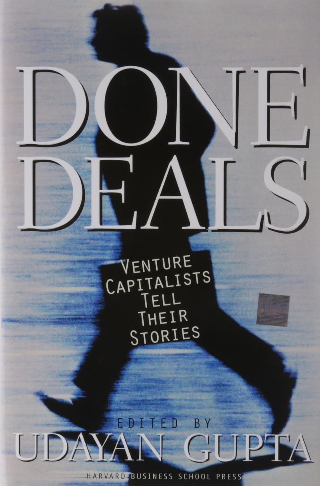

1999年，美国的风险投资基金一年募集并投出约300亿美元，而在1990年代初，这个数字还只有30亿。乌达扬·古普塔（Udayan Gupta）正是在这轮狂热的顶点写下《成交》。他并没有自己去解释风险投资，而是把话筒交给了从业者本人——全书由三十多位风险投资家的第一人称口述构成，古普塔以《华尔街日报》资深特约撰稿人的采访功力，把一段段访谈整理成连贯的自述，2000年由哈佛商学院出版社出版，正文近450页。
书中出场的名字构成了半部行业史。亚瑟·洛克（Arthur Rock）是最早把"风险资本家"（venture capitalist）这个词用在自己身上的人之一，他曾撮合仙童半导体的诞生，后来又投资了英特尔和苹果；尤金·克莱纳（Eugene Kleiner）本人就是从仙童出走的"八叛徒"之一，1972年与汤姆·珀金斯共同创办了凯鹏华盈（Kleiner Perkins）；更年轻一代如约翰·多尔（John Doerr）、杨富森（Geoff Yang）则代表了1990年代互联网浪潮中崛起的新势力。古普塔让这些人各自讲述自己是如何入行、如何看人、如何在一笔笔交易中判断团队与时机的，亚马逊、雅虎等当时最炙手可热的案例也散落在他们的讲述里。
全书按五个部分编排——"快进"（Fast Forward）、"起源"（Beginnings）、"西海岸"、"东海岸"和"愿景"（Visions）。这个结构本身就藏着古普塔的一个判断：风险投资并非铁板一块，加州沙丘路上那种紧盯技术、豪赌颠覆的西海岸打法，与波士顿128号公路一带更看重财务纪律、更偏保守的东海岸风格，是两套不同的文化。他让两岸的从业者隔空对话，读者能听出其中的地域自负与彼此的不以为然。而在"起源"部分，几位老一辈反复强调的一点是：早期的风险投资更像是"用自己的钱、凭一双看人的眼睛"下注，与后来动辄数十亿美元的机构化运作已判然有别。
这本书的长处与短处几乎是同一件事。因为它忠实保留了口述的原貌，读者能直接触到这些人真实的语气与偏见；但也正因如此，Goodreads上的读者评价它"是历史某一时刻有趣的快照"（an interesting snapshot of a point in history），同时抱怨许多故事落入相似的模板，各人的起家叙事听多了不免重复，对投资哲学的深挖也浅尝辄止。它更像一份2000年互联网泡沫破裂前夕的行业口述档案，而非一套可操作的方法论。对想理解风险投资这门生意从何而来、又是被哪些具体的人塑造成今天模样的读者，这些未经打磨的自述提供了教科书给不了的现场感。